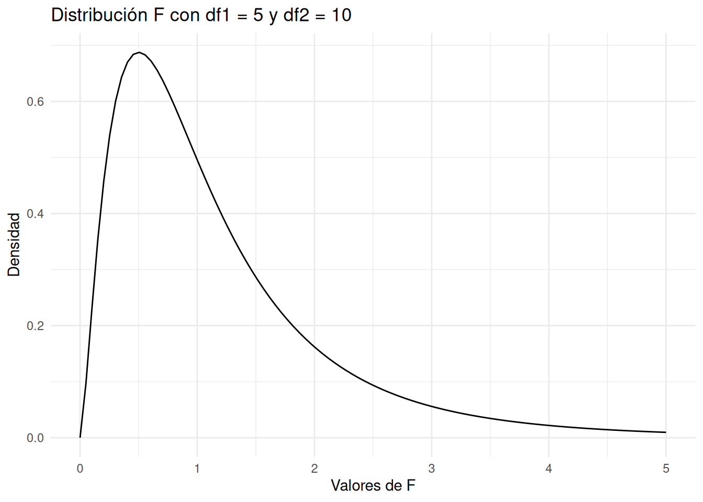
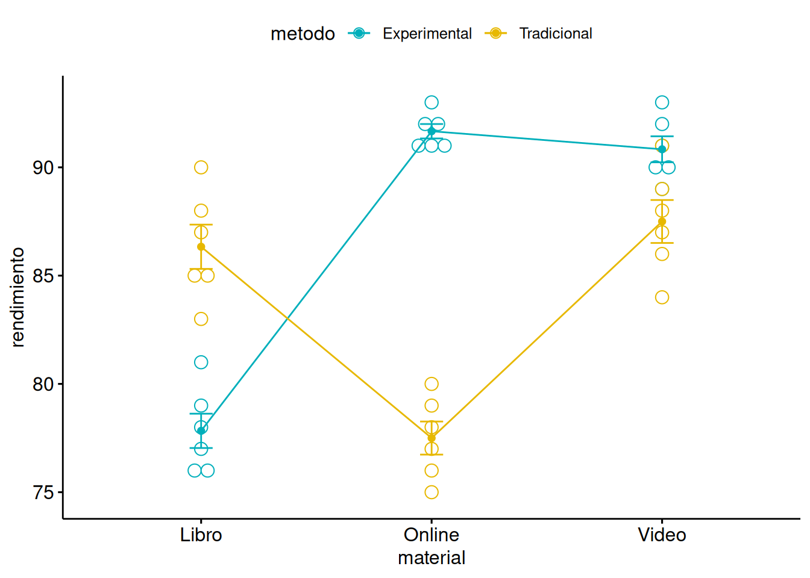
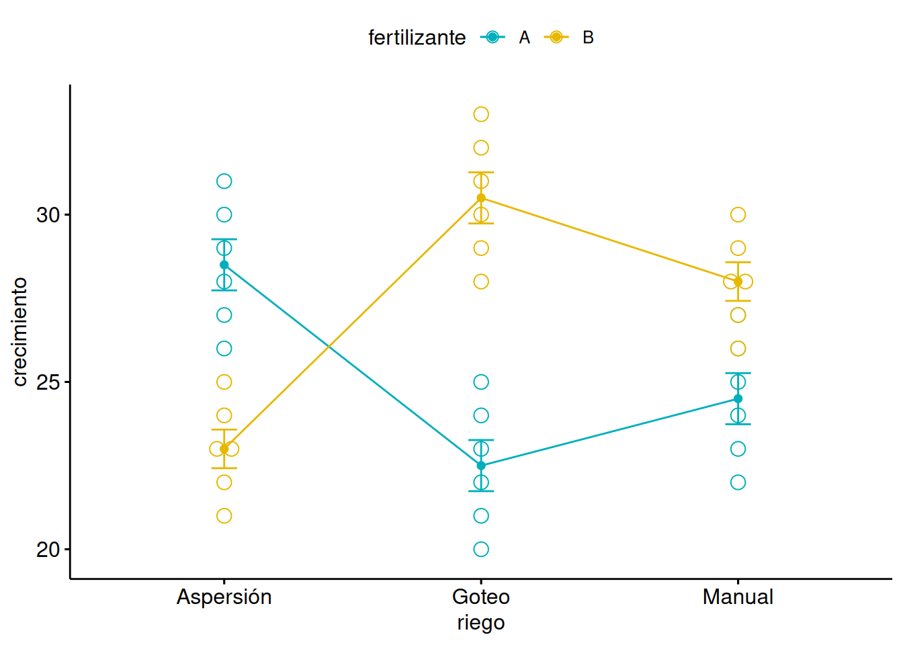
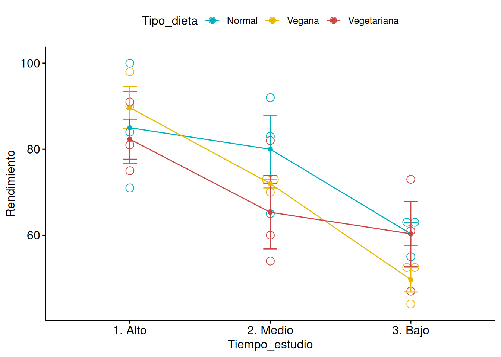
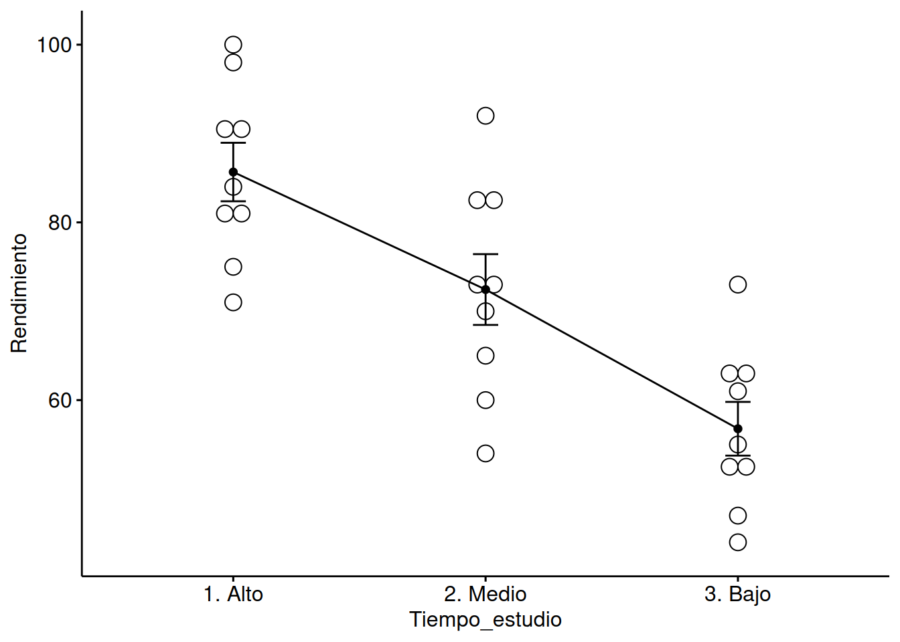

El análisis de la varianza, conocido como ANOVA (del inglés Analysis of Variance), es una técnica estadística utilizada para comparar las medias de dos o más grupos y determinar si existen diferencias significativas entre ellos. Se trata de un método desarrollado por R.A. Fisher en las primeras décadas del siglo XX. La idea central es analizar la variabilidad de los datos y dividirla en componentes atribuibles a diferentes fuentes de variación.
En su forma más simple, el ANOVA se utiliza para probar hipótesis sobre las diferencias entre las medias de grupos. Por ejemplo, si quisiéramos comparar el rendimiento de tres tipos diferentes de fertilizantes en el crecimiento de las plantas, podríamos usar ANOVA para determinar si el tipo de fertilizante tiene un efecto significativo en el crecimiento.
El proceso general del ANOVA incluye:
Formulación de hipótesis: Se establece una hipótesis nula que indica que no hay diferencias entre las medias de los grupos y una hipótesis alternativa que sugiere que al menos una media es diferente.
Cálculo de la varianza: Se calculan dos tipos de varianza: la varianza dentro de los grupos (variabilidad debido a diferencias dentro de los mismos grupos) y la varianza entre los grupos (variabilidad debido a diferencias entre los grupos).
F-test: Se realiza una prueba \(F\) de Fisher para evaluar la relación entre las varianzas. Si la varianza entre los grupos es significativamente mayor que la varianza dentro de los grupos, esto sugiere que hay diferencias significativas entre las medias de los grupos.
Análisis de resultados: Si la prueba \(F\) indica que hay diferencias significativas, se pueden realizar pruebas adicionales para identificar entre qué grupos existen estas diferencias.
El ANOVA es una herramienta poderosa porque permite comparaciones múltiples mientras controla la tasa de error tipo I. Es ampliamente utilizado en experimentos donde se comparan tratamientos o condiciones en diferentes grupos o en diferentes momentos.
Distribución F
La función de distribución F es una distribución de probabilidad que surge principalmente en el análisis de varianza (ANOVA) y en la prueba F de Fisher, utilizada para comparar dos varianzas de muestras independientes. Tal y como veremos en este capítulo, esta distribución es útil para determinar si la variabilidad entre los grupos es mayor que la variabilidad dentro de los grupos.
La distribución F tiene dos parámetros de grados de libertad: uno para el numerador (\(df1\)) y otro para el denominador (\(df2\)).
Vamos a visualizar la distribución F y calcular valores específicos usando R.
Primero, vamos a graficar la densidad de la distribución F para \(df1 = 5\) y \(df2 = 10\).
# Cargar la librería necesariaif (!requireNamespace("ggplot2", quietly =TRUE)) {install.packages("ggplot2")}library(ggplot2)# Parámetros de la distribución Fdf1 <-5df2 <-10# Crear una secuencia de valores para la variable xx <-seq(0, 5, length.out =100)# Calcular la densidad de la distribución Fy <-df(x, df1, df2)# Crear un data frame para ggplotdata <-data.frame(x, y)# Graficar la densidad de la distribución Fggplot(data, aes(x, y)) +geom_line() +labs(title =paste("Distribución F con df1 =", df1, "y df2 =", df2),x ="Valores de F",y ="Densidad") +theme_minimal()

El gráfico muestra la densidad de la distribución F para los grados de libertad especificados. La forma de la distribución F depende de los valores de df1 y df2. Te animamos a que pruebes diferentes valores de esos dos parámetros usando el código anterior.
Ahora, vamos a calcular valores específicos de la función de distribución acumulativa (CDF) y la función de densidad (PDF) para un valor de F.
# Calcular el valor de la función de densidad (PDF) para F = 2f_value <-2pdf_value <-df(f_value, df1, df2)cat("PDF en F =", f_value, "es", pdf_value, "\n")
PDF en F = 2 es 0.1620057
# Calcular el valor de la función de distribución acumulativa (CDF) para F = 2cdf_value <-pf(f_value, df1, df2)cat("CDF en F =", f_value, "es", cdf_value, "\n")
CDF en F = 2 es 0.835805
# Calcular el valor crítico de F para un nivel de significancia del 5%alpha <-0.05f_critical <-qf(1- alpha, df1, df2)cat("Valor crítico de F para un nivel de significancia del 5% es", f_critical, "\n")
Valor crítico de F para un nivel de significancia del 5% es 3.325835
El valor de la función de densidad para \(F = 2\) indica la densidad de probabilidad en ese punto específico.
El valor de la CDF para \(F = 2\) indica la probabilidad acumulada de obtener un valor de F menor o igual a \(2\).
El valor crítico de F para un nivel de significancia del \(\alpha=0.05\) es el valor de F más allá del cual la probabilidad acumulada es \(5\%\). Este valor se utiliza en pruebas estadísticas para decidir si se rechaza o no la hipótesis nula.
5.1 Modelo con un factor
El modelo de ANOVA de un factor se utiliza cuando se estudia el efecto de un solo factor (variable independiente) en una variable dependiente continua. Este modelo permite comparar las medias de varios grupos para determinar si existen diferencias significativas entre ellos.
Hipótesis:
Hipótesis Nula (\(H_0\)): Todas las medias de los grupos son iguales (\(\mu_1 = \mu_2 = \cdots = \mu_k\)).
Hipótesis Alternativa (\(H_a\)): Al menos una de las medias de los grupos es diferente.
Tenemos una variable aleatoria \(Y\) que toma valores reales y una variable cualitativa o factor \(X\) con \(k\) niveles \(1,2,\ldots,i,\ldots,k\). La variable \(Y\) toma valores \(Y_{ij}, j=1,\ldots,n_i\) en el nivel \(i\) del factor \(X\), siendo \(n_i\) el número de observaciones en el nivel \(i\) del factor \(X\).
Tenemos los siguientes supuestos:
Normalidad: Las distribuciones de las poblaciones de las que provienen las muestras son normales.
Homogeneidad de varianzas: Las varianzas de las poblaciones son iguales.
Independencia: Las observaciones son independientes entre sí.
Escribimos el modelo como sigue: \[
Y_{ij} = \mu + \tau_i + \epsilon_{ij}
\] Donde:
\(Y_{ij}\) es la observación \(j\)-ésima del grupo \(i\)-ésimo.
\(\mu\) es la media general.
\(\epsilon_{ij}\) es el término de error aleatorio.
\(\tau_i\) es el efecto del grupo i-ésimo en la media de la variable respuesta \(Y\). Esto es, cuánto aumenta o disminuye la media de \(Y\) por pertenecer la observación a la categoría \(i\). De modo que podemos llamar \[
Y_i=\mu+\tau_i
\] al efecto medio del grupo \(i\)-esimo.
La suma de las diferencias al cuadrado de cada dato respecto a la media general se calcula como sigue: \[
\text{SST} = \sum_{i=1}^{k} \sum_{j=1}^{n_i} (Y_{ij} - \bar{Y}_{..})^2
\] donde \(\bar{Y}_{..}\) es la media general de todas las observaciones.
Teniendo en cuenta que: \[
Y_{ij} - \bar{Y}_{..}= Y_i + \epsilon_{ij} - \bar{Y}_{..}
\] Podemos descomponer la suma de cuadrados, como sigue:
Donde: La varianza entre grupos se calcula como la suma de las diferencias al cuadrado de las medias de los grupos respecto a la media general, ponderada por el tamaño de los grupos: \[
\text{SSB} = \sum_{i=1}^{k} n_i (\bar{Y}_i - \bar{Y}_{..})^2
\] donde \(\bar{Y}_i\) es la media del grupo \(i\).
Además, la varianza dentro de los grupos, se calcula como la suma de las diferencias al cuadrado de cada dato respecto a la media de su grupo se obtiene como: \[
\text{SSW} = \sum_{i=1}^{k} \sum_{j=1}^{n_i} (Y_{ij} - \bar{Y}_i)^2
\] Esto es, se descompone la variabilidad total de los datos en dos componentes, SSB que refleja la diferencia de cada grupo respecto a la media global y SSW que refleja la variabilidad intrínseca dentro de cada grupo: \[
\text{SST} = \text{SSB} + \text{SSW}
\]
Cálculo del Estadístico F: \[
F = \frac{\text{Varianza Entre Grupos (MSB)}}{\text{Varianza Dentro de los Grupos (MSW)}}
\] Donde:
MSB (Mean Square Between): Media cuadrática entre grupos.
MSW (Mean Square Within): Media cuadrática dentro de los grupos.
Esto es: \[
F=\frac{SSB/df_B}{SSW/df_W}
\] donde:
\(df_B=k-1\) son los grados de libertad entre los grupos
\(df_W=N-k\) son los grado sd elibertado dentro de los grupos, siendo \(N\) el número total de observaciones.
Una vez se dispone de toda esta información, es común representarla en forma de tabla, en la llamada Tabla ANOVA:
Fuente de variación
Suma de cuadrados
Grados de libertad
Cuadrado Medio
Disferencias entre grupos
SSB
k-1
MSB
Diferencias dentro de los grupos, Residual o Error
SSW
N-k
MSW
Total
SST
N-1
Para el futuro
La proporción de variabilidad explicada por los grupos se calcula como: \[
R^2=1-SSW/SST
\] Este valor, será muy importante en la asignatura de Regresión del Grado en Ciencia e Ingeniería de Datos.
El estadístico de prueba \(F \sim F_{df_B,df_W}\) bajo la hipótesis nula de igualdad de medias.
El \(p-valor\) se obtiene a partir de la distribución \(F\), considerando los grados de libertad de numerador y denominador. Esto es: \[
p-valor=P(F_{df_b,df_W}>F_{muestral})
\]
Como en otros contrastes, si el \(p-valor\) p es menor que el nivel de significancia (\(\alpha\)), se rechaza la hipótesis nula, concluyendo que al menos una de las medias de los grupos es diferente.
Ejemplo. ANOVA de un factor
Vamos a realizar un ejemplo completo de ANOVA de un factor, donde calcularemos todos los pasos del contraste, incluidos el valor de F y el p-valor.
Supongamos que tenemos tres tratamientos (A, B y C) y sus correspondientes muestras de datos son:
Grupo A: \([5, 7, 6, 9, 6]\)
Grupo B: \([8, 12, 9, 11, 10]\)
Grupo C: \([14, 10, 13, 15, 12]\)
Nuestro objetivo es determinar si existe una diferencia significativa entre las medias de estos tres grupos.
En primer lugar calculamos la media de cada grupo y la media general:
Media de Grupo A (\(\bar{Y}_A\)): \[
\bar{Y}_A = \frac{5 + 7 + 6 + 9 + 6}{5} = \frac{33}{5} = 6.6
\]
Media de Grupo B (\(\bar{Y}_B\)): \[
\bar{Y}_B = \frac{8 + 12 + 9 + 11 + 10}{5} = \frac{50}{5} = 10.0
\]
Media de Grupo C (\(\bar{Y}_C\)): \[
\bar{Y}_C = \frac{14 + 10 + 13 + 15 + 12}{5} = \frac{64}{5} = 12.8
\]
Media General (\(\bar{Y}\)): \[
\bar{Y} = \frac{6.6 + 10.0 + 12.8}{3} = \frac{29.4}{3} \approx 9.8
\]
Calculamos la Suma de Cuadrados entre Grupos (SSB)
\[
\text{SSB} = n_A (\bar{Y}_A - \bar{Y})^2 + n_B (\bar{Y}_B - \bar{Y})^2 + n_C (\bar{Y}_C - \bar{Y})^2
\] donde \(n_A = n_B = n_C = 5\) (número de observaciones en cada grupo). Fíjate que el número de observaciones en cada grupo podría ser diferente. En este ejemplo, son iguales.
Entonces, la Suma de Cuadrados Dentro de los Grupos (SSW) es: \[
\text{SSW} = 9.2 + 10.0 + 14.8 = 34.0
\]
Tenemos, por tanto que la Suma Total de Cuadrados (SST) es: \[
\text{SST} = \text{SSB} + \text{SSW} = 96.4 + 34.0 = 130.4
\]
Para realizar el contraste, necesitamos calcular los Grados de Libertad del estadístico:
Grados de libertad entre los grupos (\(\text{df}_B = k-1=3-1=2\)):
Grados de libertad dentro de los grupos (\(\text{df}_W=N-k=15-3=12\)):
Calcularemos las varianzas como sigue:
Varianza entre los grupos (MSB): \[
\text{MSB} = \frac{\text{SSB}}{\text{df}_B} = \frac{96.4}{2} = 48.2
\]
Varianza dentro de los grupos (MSW): \[
\text{MSW} = \frac{\text{SSW}}{\text{df}_W} = \frac{34.0}{12} \approx 2.8333
\]
Ya estamos en disposición de calcular el estadístico de contraste : \[
F = \frac{\text{MSB}}{\text{MSW}} = \frac{48.2}{2.8333} \approx 17.01
\]
El p-valor se obtiene utilizando la distribución \(F\) con \(\text{df}_B = 2\) y \(\text{df}_W = 12\). Para este ejemplo, podemos utilizar software estadístico o tablas de distribución F.
Usando R:
pf(17.01, df1 =2, df2 =12, lower.tail =FALSE)
[1] 0.0003143459
El p-valor es muy pequeño, mucho menor que el grado de significancia \(\alpha=0.05\), indicando una diferencia significativa entre los grupos.
5.2 Modelo con dos factores con y sin interacción
El modelo de ANOVA de dos factores se utiliza cuando se estudian dos factores simultáneamente para evaluar su efecto individual y conjunto en una variable dependiente. Podemos verlo como una generalización del caso de ANOVA con un único factor. Este modelo es más complejo y permite entender no solo los efectos principales de cada factor, sino también si existe una interacción entre ellos.
Sean A y B dos factores que se desean estudiar, con \(m_A\) y \(m_B\) niveles. Trabajaremos con las siguientes hipótesis nulas:
Hipótesis:
Hipótesis Nula para los efectos principales (\(H_0\)):
No hay efecto del primer factor.
No hay efecto del segundo factor.
Hipótesis Nula para la interacción (\(H_0\)): No hay interacción entre los dos factores.
\(Y_{ijk}\) es la observación \(k\)-ésima del nivel \(j\)-ésimo del factor B y nivel \(i\)-ésimo del factor A. - \(\mu\) es la media general.
\(\alpha_i\) es el efecto del nivel \(i\)-ésimo del factor A.
\(\beta_j\) es el efecto del nivel \(j\)-ésimo del factor B. - \(\epsilon_{ijk}\) es el término de error aleatorio.
En este caso, la tabla ANOVA queda como sigue:
Fuente de variación
Suma de cuadrados
Grados de libertad
Cuadrado Medio
Diferencias entre niveles del factor A
\(SSB_A\)
\(m_A-1\)
\(MSB_A\)
Diferencias entre niveles del factor B
\(SSB_B\)
\(m_B-1\)
\(MSB_B\)
Error
\(SSW\)
\(N-m_A-m_B+1\)
\(MSW\)
Total
\(SST\)
\(N-1\)
Para estudiar la importancia de cada factor se calcula el estadístico \(F\) particular para cada uno de ellos como sigue: \[
F_A=\frac{MSB_A}{MSW} \sim F_{m_A-1,N-m_A-m_B+1}
\] y \[
F_B=\frac{MSB_B}{MSW}\sim F_{m_B-1,N-m_A-m_B+1}
\] A partir de estos estadísticos de prueba podemos contrastar las hipótesis nulas de no existencia de efectos asociados a los factores \(A\) y \(B\) respectivamente.
A partir de este estadísticos de prueba podemos contrastar la hipótesis nula de no existencia de interacción entre los dos factores \(A\), \(B\). Si podemos rechazar esa hipótesis, es decir, si existe interacción entre los factores, entonces hemos terminado. Es decir, no podemos eliminar ningún factor del modelo. En cambio, si no rechazamos la hipótesis nula, es decir, si no existe interacción entre los factores, podemos eliminar dicho efecto (la interacción) del modelo y pasar a un modelos sin interacción como el anteriormente descrito.
Ejemplo. ANOVA de dos factores con interacción
Supongamos que estamos estudiando el efecto de dos factores sobre el rendimiento de los estudiantes: el método de enseñanza (con dos niveles: Tradicional y Experimental) y el tipo de material de estudio (con tres niveles: Libro, Video, y Online). Queremos saber si estos factores, y su posible interacción, tienen un efecto significativo en el rendimiento.
Bin width defaults to 1/30 of the range of the data. Pick better value with
`binwidth`.

Ahora que tenemos nuestros datos, vamos a realizar el ANOVA de dos factores con interacción.
# Realizar el ANOVA de dos factores con interacciónanova_result <-aov(rendimiento ~ metodo * material, data=datos)# Mostrar los resultados del ANOVAsummary(anova_result)
Df Sum Sq Mean Sq F value Pr(>F)
metodo 1 81.0 81.0 21.83 5.88e-05 ***
material 2 309.7 154.9 41.73 2.16e-09 ***
metodo:material 2 771.2 385.6 103.90 3.26e-14 ***
Residuals 30 111.3 3.7
---
Signif. codes: 0 '***' 0.001 '**' 0.01 '*' 0.05 '.' 0.1 ' ' 1
Los resultados del ANOVA se interpretan observando los \(p-valores\) para cada uno de los componentes del modelo:
metodo: Efecto principal del método de enseñanza.
material: Efecto principal del tipo de material de estudio.
metodo:material: Interacción entre el método de enseñanza y el tipo de material de estudio.
El \(p-valor\) asociado a la interacción es menor que \(0.05\), lo que indica que la interacción entre el método de enseñanza y el tipo de material de estudio es significativa y por lo tanto no debe ser eliminada del modelo.
Efectivamente, viendo la figura anterior concluimos que el rendimiento depende de la interacción entre los dos factores. Así, por ejemplo, cuando el matería es proporcionado de modo “online” o en “vídeo” el rendimiento es más elevado en el método experimental que en el método tradicional. La diferencia entre los dos métodos es especialmente notable cuando el material es “online”. Sin embargo, cuando el material se ofrece en modo “libro” el método tradicional ofrece mejores resultados que el método experimental.
Ejemplo. ANOVA de dos factores no significativos
Supongamos que estamos estudiando el efecto del tipo de fertilizante (con dos niveles: \(A\) y \(B\)) y el tipo de riego (con tres niveles: Goteo, Aspersión, Manual) sobre el crecimiento de las plantas.
En primer lugar observamos los datos:
# Crear datos simuladoscrecimiento <-c(20, 21, 23, 22, 24, 25, 26, 27, 28, 29, 30, 31,22, 23, 25, 24, 26, 27, 28, 29, 30, 31, 32, 33,21, 23, 22, 24, 23, 25, 26, 28, 27, 29, 28, 30)fertilizante <-factor(rep(c("A", "B"), each=18))riego <-factor(rep(c("Goteo", "Aspersión", "Manual"), each=6, times=2))# Crear un data framedatos <-data.frame(crecimiento, fertilizante, riego)# Visualizar los datoslibrary("ggpubr")ggline(datos, x ="riego", y ="crecimiento", color ="fertilizante",add =c("mean_se", "dotplot"),palette =c("#00AFBB", "#E7B800"))
Bin width defaults to 1/30 of the range of the data. Pick better value with
`binwidth`.

Realizamos el ANOVA de dos factores con interacción.
# Realizar el ANOVA de dos factores con interacciónanova_result <-aov(crecimiento ~ fertilizante * riego, data=datos)# Mostrar los resultados del ANOVAsummary(anova_result)
El \(p-valor\) asociado a la interaccióni es mayor que \(0.05\) lo, lo que indica que la interacción entre el tipo de fertilizante y el tipo de riego no es significativa y debe de ser eliminada del modelo.
Por tanto, obtenemos la tabla ANOVA para los dos factores sin interacción:
# Realizar el ANOVA de dos factores sin interacciónanova_result <-aov(crecimiento ~ fertilizante + riego, data=datos)# Mostrar los resultados del ANOVAsummary(anova_result)
Df Sum Sq Mean Sq F value Pr(>F)
fertilizante 1 36.0 36.00 3.084 0.0886 .
riego 2 3.5 1.75 0.150 0.8614
Residuals 32 373.5 11.67
---
Signif. codes: 0 '***' 0.001 '**' 0.01 '*' 0.05 '.' 0.1 ' ' 1
Una vez eliminado el efecto de la interacción del modelo, podemos observar como ninguno de los dos factores para estadísticamente significativo, puesto que los \(p-valores\) asociados son mayores que \(0.05\). Sin embargo, hemos de actuar con cautela. Veamos el modelo cuando se elimina el factor menos significativo riego:
# Realizar el ANOVA de un factoranova_result <-aov(crecimiento ~ fertilizante, data=datos)# Mostrar los resultados del ANOVAsummary(anova_result)
Df Sum Sq Mean Sq F value Pr(>F)
fertilizante 1 36 36.00 3.247 0.0804 .
Residuals 34 377 11.09
---
Signif. codes: 0 '***' 0.001 '**' 0.01 '*' 0.05 '.' 0.1 ' ' 1
Al nivel de significancia estadística de \(0.05\) podríamos decir que el factor fertilizante no es estadísticamente significativo y que ninguno de los dos factores influye en el crecimiento de las planteas.
Ahora bien, si tuvieras que elegir un método de riego y un fertilizando, ¿cuál recomendarías al cliente? ¿por qué?
Ejemplo. ANOVA de dos factores sin interacción
Supongamos que estamos estudiando del tiempo de estudio y del tipo de dieta en el rendimiento académico de un grupo de estudiantes. El tiempo de estudio tiene \(3\) niveles (Alto, Medio y Bajo). El tipo de dieta tiene \(3\) niveles (Normal, Vegana y Vegetariana).
En primer lugar observamos los datos:
# Datosdatos <-data.frame(Tiempo_estudio =factor(rep(c("1. Alto", "2. Medio", "3. Bajo"), each =9)),Tipo_dieta =factor(rep(c("Vegetariana", "Normal", "Vegana"), times =9)),Rendimiento =c(81, 71, 90, 75, 84, 81, 91, 100, 98, # Datos para Nivel1 de Factor160, 83, 70, 54, 65, 73, 82, 92, 73, # Datos para Nivel2 de Factor147, 63, 44, 61, 55, 52, 73, 63, 53) # Datos para Nivel3 de Factor1)# Visualizarlibrary("ggpubr")ggline(datos, x ="Tiempo_estudio", y ="Rendimiento", color ="Tipo_dieta",add =c("mean_se", "dotplot"),palette =c("#00AFBB", "#E7B800","#c94545"))
Bin width defaults to 1/30 of the range of the data. Pick better value with
`binwidth`.

Realizamos el ANOVA de dos factores con interacción.
# Realizar el ANOVA de dos factores con interacciónanova_result <-aov(Rendimiento ~ Tiempo_estudio * Tipo_dieta, data = datos)# Mostrar los resultados del ANOVAsummary(anova_result)
La interacción entre los dos factores no es estadísticamente significativa a nivel \(\alpha=0.05\) y por lo tanto eliminamos dicha fuente de variabilidad del modelo.
# Realizar el ANOVA de dos factores sin interacciónanova_result <-aov(Rendimiento ~ Tiempo_estudio + Tipo_dieta, data = datos)# Mostrar los resultados del ANOVAsummary(anova_result)
Df Sum Sq Mean Sq F value Pr(>F)
Tiempo_estudio 2 3765 1882.3 17.178 3.21e-05 ***
Tipo_dieta 2 169 84.6 0.772 0.474
Residuals 22 2411 109.6
---
Signif. codes: 0 '***' 0.001 '**' 0.01 '*' 0.05 '.' 0.1 ' ' 1
Podemos observar que el tipo de dieta no es un factor significativo en el rendimiento académico. Por tanto, eliminamos dicho factor del modelo.
# Realizar el ANOVA de un factoranova_result <-aov(Rendimiento ~ Tiempo_estudio , data = datos)# Mostrar los resultados del ANOVAsummary(anova_result)
Df Sum Sq Mean Sq F value Pr(>F)
Tiempo_estudio 2 3765 1882.3 17.51 2.04e-05 ***
Residuals 24 2580 107.5
---
Signif. codes: 0 '***' 0.001 '**' 0.01 '*' 0.05 '.' 0.1 ' ' 1
En cambio, el tiempo de estudio sí es un factor determinante en el rendimiento académico. Su \(p-valor\) asociado es claramente inferior al nivel de significancia \(0.05\).
Podemos visualizar el resultado:
# Visualizarlibrary("ggpubr")ggline(datos, x ="Tiempo_estudio", y ="Rendimiento",add =c("mean_se", "dotplot"))
Bin width defaults to 1/30 of the range of the data. Pick better value with
`binwidth`.

5.3 Comparaciones múltiples
En el último ejemplo del apartado anterior hemos determinado que un factor con \(3\) niveles era estadísticamente significativo. Es decir, podemos rechazar la siguiente hipótesis nula:
\[H_O: \mu_1=\mu_2\ldots = \mu_k\] (con \(k\) igual al número de niveles en el factor). Podemos plantearnos la pregunta siguiente: ¿En qué niveles del factor se encuentran las principales diferencias? Es decir, qué hipotesis (una o varias) de las siguientes son rechazadas: \[H_O: \mu_1=\mu_2\]\[H_O: \mu_1=\mu_3\]\[\ldots\]\[H_O: \mu_{k-1} = \mu_k\]
En un ejemplo con \(k=3\) niveles en el factor, es posible plantear \(3\) contrastes de igualdad de medias, como los estudiados en capítulos anteriores. En un ejemplo con \(k\) niveles en el factor, es posible plantear \(k*(k-1)/2\) posibles contrastes de igualda de medias. Sin embargo, si realizamos todos estos contrastes, aumenta la probabilidad de cometer errores de tipo I (rechazar incorrectamente la hipótesis nula). Este fenómeno se conoce como el problema de las pruebas múltiples.
Como hemos venido viendo, cuando realizamos una sola prueba de hipótesis (por ejemplo, una prueba \(t\) de Student o un ANOVA), generalmente establecemos un nivel de significancia predeterminado, como \(\alpha = 0.05\). Esto significa que estamos dispuestos a aceptar una probabilidad de error de tipo I del \(5\%\), es decir, hay un \(5\%\) de probabilidad de rechazar incorrectamente la hipótesis nula cuando es verdadera.
Sin embargo, cuando realizamos múltiples pruebas de hipótesis, la probabilidad acumulada de cometer al menos un error de tipo I aumenta significativamente con cada prueba adicional. Por ejemplo, si realizamos \(10\) pruebas de hipótesis independientes, cada una con un nivel de significancia de \(\alpha = 0.05\), la probabilidad de cometer al menos un error de tipo I aumenta a más del \(40\%\) (\(1-(1-0.05)^{10}\approx 0.401\).
Existe una solución, las comparaciones múltiples necesarias para controlar este aumento en el riesgo de error. Existen varios métodos para controlar el problema de las pruebas múltiples, como los ajustes de Bonferroni, Holm-Bonferroni, Holm, Hochberg, Benjamini-Hochberg (FDR), entre otros. Estos métodos controlan la tasa global de error de tipo I para todas las comparaciones realizadas, manteniendo un nivel de significancia general específico.
5.3.1 Método de Bonferroni
El método de Bonferroni es una técnica comúnmente utilizada para corregir el problema de las comparaciones múltiples y controlar el riesgo de error de tipo I. Este método es relativamente simple y conservador, lo que lo hace popular en muchas aplicaciones estadísticas.
La idea principal detrás del método de Bonferroni es ajustar el nivel de significancia individual para cada prueba de hipótesis realizada. En lugar de utilizar un nivel de significancia estándar (por ejemplo, \(\alpha = 0.05\)), dividimos el nivel de significancia global deseado (generalmente \(0.05\)) por el número total de pruebas realizadas (\(m\)): \[
\alpha' = \frac{\alpha}{m}
\] Esta división produce un nivel de significancia más estricto (\(\alpha'\)) para cada prueba individual, lo que ayuda a controlar el riesgo global de error de tipo I.
Utilizamos el nivel de significancia individual ajustado para cada prueba de hipótesis. Si el \(p-valor\) de una prueba es menor que el nivel de significancia ajustado, rechazamos la hipótesis nula de la prueba.
El método de Bonferroni es fácil de entender e implementar, y proporciona un control conservador sobre el error de tipo I en comparaciones múltiples. No obstante puede ser un método demasiado conservador en situaciones donde se realizan muchas comparaciones, lo que puede resultar en una pérdida de potencia estadística. Además, no tiene en cuenta la correlación entre las pruebas realizadas.
Ejemplo. Comparaciones múltiples
Continuamos con el ejemplo anterior anterior sobre la influencia del tiempo de estudio en el rendimiento académico. Hemos visto que existe una relación entre ambos factores. En otras palabras, hemos rechazado la siguiente hipótesis nula:
\[
H_0: \mu_{Alto}=\mu_{Medio}=\mu_{Bajo}
\] Pero, ¿dónde se encuentran las diferencias relevantes?. Calculamos las tres medias muestrales
Pairwise comparisons using t tests with pooled SD
data: datos$Rendimiento and datos$Tiempo_estudio
1. Alto 2. Medio
2. Medio 0.037 -
3. Bajo 1.3e-05 0.011
P value adjustment method: bonferroni
Dado que todos los \(p-valores\) ajustados son menores que \(0.05\), podemos rechazar las \(3\) hipótesis nulas. Es decir, rechazamos que el rendimiento sea el mismo para los diferentes niveles de tiempos de estudio.
Y en R podemos pintarlo como sigue (aquí empleamos otro método de corrección diferente al de Bonferroni, revísalo)